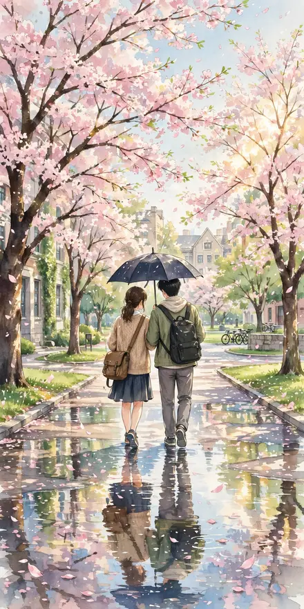

長編・全9章・完結
傘のなかの春
キャンパス恋愛小説 ・ 約9,156字
本作はフィクションです。登場する人物・団体・地名はすべて架空のものであり、実在のものとは一切関係ありません。
大学のキャンパス。雨の日に傘の中で始まる、小さな恋の物語。春の光の中で、二人の距離は少しずつ近づいていく。
目次（全9章）
第一章 三階の窓際
四月、桜が散りはじめたキャンパスは、新入生のはしゃぐ声で、どこもかしこも騒がしかった。
篠原咲、二十歳。文学部の二年生。人の多い場所はあまり得意ではなくて、昼休みになると決まって図書館の三階、いちばん奥の書架の前に逃げ込んだ。ここなら、誰にも話しかけられない。
その日、咲はレポートのために、夏目漱石の『こころ』を探していた。目当ての文庫は、書架のいちばん上の段に、一冊だけ残っていた。背伸びをして手を伸ばす。あと少し。指先が背表紙に触れた、そのとき。
別の指が、同じ本に重なった。
「あ、失礼」
低くて、やわらかい声だった。咲が振り向くと、背の高い青年が、ぱっと手を引っ込めたところだった。黒い髪を短く整えて、白いシャツの袖口まできちんとボタンを留めている。
「どうぞ、お先に」
「いえいえ、そっちが先に取ろうとしてたやん。どうぞ」
「いえ、僕はもう三回読んでいるんです。ですから、お先に」
「三回も？ そんなに好きなん」
「祖父が好きだった本で。……あ、すみません、初対面で変な話を」
青年は、耳の先を赤くして、ぺこりと頭を下げた。胸元の学生証ホルダーが揺れて、「工学部 三回生 瀬戸悠真」という文字が見えた。工学部の人が、漱石を三回も。
「ほな、遠慮なく借ります」
「はい。……あの、もしよければ、読み終わったら、感想を聞かせてください」
そう言い残して、悠真は、何度も振り返りながら去っていった。変な人、と咲は思った。けれど、胸のあたりが、くすぐったかった。
夜、借りてきた文庫を開くと、ページの間から、細長い栞がするりと落ちた。押し花になった桜の花びらが、薄い和紙に挟まれている。裏には、流れるように美しい筆跡で、一行だけ書かれていた。
『毎週火曜の昼、三階の窓際におります。 瀬戸』
咲は、栞を持ったまま、しばらく動けなかった。
「……あの人、ほんまに、いつの時代の人なん」
笑いながら、咲は、その栞を、自分の手帳の最初のページに、そっと挟んだ。
第二章 ふたりぶんの傘
火曜日の昼、咲は、三階の窓際に行った。行くつもりはなかったのに、足が勝手に向かっていた。
悠真は、いた。窓際の席に姿勢よく座って、本を読んでいる。咲に気づくと、立ち上がって、向かいの椅子をすっと引いた。
「来てくださって、ありがとうございます」
「別に、たまたま通りかかっただけやで」
「それでも、嬉しいです」
さらりと言うので、咲のほうが照れてしまった。
その日から、火曜の昼は、ふたりの時間になった。悠真は、本の話をするとき、少年のように目を輝かせた。咲の感想を、ひとつひとつ、うなずきながら聞いてくれる。咲が冗談を言うと、真面目な顔のまま、三秒遅れて、ふっと吹き出す。その三秒が、咲は好きだった。
五月の半ば、授業が終わると、空が急に暗くなった。校舎を出た途端に、大粒の雨が降り出す。咲が鞄を頭にかざして立ち往生していると、後ろから声がした。
「篠原さん」
悠真が、黒い大きな傘を差して立っていた。
「お困りのようでしたので。よければ、駅まで」
「えっ、でも、悪いし」
「僕が、そうしたいのです」
ふたりで一本の傘に入ると、悠真は、さりげなく、傘を咲のほうへ傾けた。肩と肩が、触れるか触れないかの距離。雨音よりも、自分の心臓のほうが、うるさいと思った。
駅についたとき、咲は、気づいた。悠真の左肩が、びしょ濡れになっている。
「ちょっと、肩、濡れてるやん！」
「ああ、僕は頑丈なので」
「アホなん？ 風邪ひくで」
「大丈夫です。……あなたが濡れないほうが、僕は嬉しいので」
咲は、何も言えなくなった。ただ、ハンカチを出して、悠真の肩を、ぎこちなく拭いた。悠真は、固まったまま、耳まで真っ赤になっていた。
「……ありがとうございます。一生、洗いません」
「洗いや！」
笑い声が、改札前の雨音の中に、溶けていった。
第三章 キャンパスのマドンナ
おもしろくない人が、ひとりいた。
大塚凛子、三回生。学内ミスコンの準優勝経験者で、文化祭実行委員会の委員長。成績は学部で常に上位、家は老舗の呉服屋で、いつも非の打ちどころのない笑顔をしている。取り巻きの女の子が、何人もいた。
その凛子が、一年生のときから、ずっと悠真を見つめていたことを、咲は、まだ知らなかった。
「咲、お願い！ 実行委員、人が足りひんねん。一緒に入って！」
親友の花音に手を引かれて、咲は、文化祭実行委員の会議室に連れてこられた。おしゃべりで、世話焼きで、キャンパス中の噂を、誰よりも早く仕入れてくる子だ。
そこに、悠真がいた。副委員長の腕章をつけて、資料を配っている。咲を見つけると、ぱっと顔を明るくした。
「篠原さん。来てくださったんですね」
その瞬間、会議室の空気が、すこし冷えた。委員長席の凛子が、ゆっくりと、こちらを見た。
「瀬戸くん、お知り合い？」
「はい。図書館で、本の趣味が合いまして」
「そう。素敵やね。……ええっと、篠原さん、やったかな。よろしくね」
凛子は、完璧な笑顔で言った。けれど、その目は、まったく笑っていなかった。
会議のあと、咲が、ひとりで備品の段ボールを運んでいると、凛子が、すっと隣に立った。
「篠原さん、瀬戸くんのこと、どこまで知ってはるの」
「え、どこまでって」
「あの子、家庭のことで、ちょっと問題があるんよ。ご両親は離婚してて、お父さんとは、ずっと絶縁状態やって。そういう子は、人との距離の取り方が、難しいんと違うかな。あなたみたいに、真っ直ぐな子が、傷つかなええけど」
咲は、手を止めた。段ボールの角が、指先に食い込んで、ちくりと痛んだ。
「……そうなんですか」
「さあ。噂やけどね」
凛子が去っていったあと、咲は、廊下の窓に映る自分の顔を、じっと見つめた。悠真さんに、そんな事情があったなんて。聞いてへん。それは当たり前や。まだ出会って、ひと月しか経っていないのに。
どうして、こんなに、胸が痛いんやろう。
第四章 おばあちゃんの針箱
咲は、大学のある街から電車で三十分、大阪の古い一軒家で暮らしている。
祖母の千代、八十二歳。かつて、一階で仕立て屋を営んでいた人だ。祖父の昭夫が三年前に亡くなってから、ひとり暮らしになった。両親は仕事の都合で福岡にいる。咲が、祖母の家から大学に通う、というのが、家族の決めた約束だった。
「咲ちゃん、ご飯、まだやったかいな」
「さっき食べたやん、おばあちゃん。一緒に」
「そうやったかいな。ごめんなあ」
千代は、最近、よく物忘れをするようになった。診断は、まだついていない。けれど、鍋を火にかけたまま、うとうとと眠ってしまうことがある。咲は、バイトの時間を減らして、授業が終わるとまっすぐ家に帰る。夜は、ガスの元栓を、何度も確かめる。
それでも、咲は、祖母のことが好きだった。
縁側の座布団に座って、千代が針仕事をする横顔を眺めるのが、子どものころから、いちばん好きな時間だった。
「おじいちゃんはな、私の針の音が、好きやったんよ」
千代は、よく、そう言った。
「夜、仕事から帰ってきてな、何も言わんと、ただ、お茶飲みながら、私の針の音を聞いとるの。『お前の針の音は、ええ音やなあ』って。それだけ。ほんまに、それだけやった。でもな、咲ちゃん。人を好きになるいうんはな、そういう、何でもない時間を、大事にできるいうことなんよ」
咲は、祖母の隣で、同じように針を持った。文化祭の衣装を、縫うためだ。
「咲ちゃん、最近、ええ顔しとるな」
千代が、ふと言った。
「え、そんなこと」
「好きな子、できたんやろ」
「な、なにを言うてんの」
「顔に、書いてあるわ。ふふ。おじいちゃんも、そうやった。おばあちゃんに、初めて会うた日の夜、眠られへんかった言うてたで」
咲は、返事ができなかった。ただ、針先が、少し、にじんで見えた。
「なあ、おばあちゃん。もしな、その人に、ちょっと複雑な事情があったら、どうする」
千代は、手を止めずに答えた。
「過ちのない人なんて、おらへんよ。大事なんは、いま、その人がどんな顔で笑うかや。ほんで、あんたが、どんな顔で笑えるか」
窓の外では、夕焼けが、庭の柿の木を、茜色に染めていた。
第五章 星の見える屋上
文化祭の準備は、日に日に忙しくなっていった。
十月の夜、実行委員の作業が終わったあと、咲は、花音に頼まれて、備品を屋上の倉庫に戻しに行った。階段を上がりきると、扉の向こうに、先客がいた。
悠真が、フェンスにもたれて、夜空を見上げていた。
「……篠原さん」
「あ、ごめん、邪魔した？」
「いいえ。よければ、隣に」
屋上からは、街の灯りが、遠くまで見えた。空には、秋の星が、ちらちらと瞬いている。
「凛子さんから、聞きましたか。僕の家のこと」
咲は、はっとした。悠真は、前を向いたまま、静かに言った。
「いいんです。本当のことですから。父は、船の機関士で、一年の半分以上、家にいませんでした。母は、ひとりで僕を育てて、疲れ果てて。中学のとき、ふたりは離婚しました。僕は、父を許せなかった。それから、もう、七年、口をきいていません」
「……そう、やったんやね」
「言い訳は、しません。ただ、あなたには、知っておいてほしかった。誤解されたまま、あなたの隣にいるのは、苦しいので」
悠真の横顔は、星明かりの中で、とても不器用で、とても誠実に見えた。咲は、胸が詰まった。
「悠真さん」
「はい」
「うち、おばあちゃんがな、言うてた。過ちのない人なんて、おらへんって。大事なんは、いま、その人がどんな顔で笑うかやって」
悠真は、目を見開いた。それから、ゆっくりと、咲のほうを向いた。
「……あなたは、本当に、優しい方ですね」
「優しいんと違うよ。ただ、悠真さんが笑うとこ、見てたいだけや」
沈黙が、落ちた。やがて、悠真の手が、咲の手の上に、そっと重ねられた。冷たい夜風の中で、その手だけが、あたたかかった。
何も言わなかった。咲も、何も言わずに、その手を、握り返した。
遠くで、終電の音が、聞こえた。
第六章 すり替えられた手紙
それからの日々は、咲にとって、夢のようだった。
「咲さん」と、呼ばれるようになった。篠原さん、から、咲さん、に変わったのは、屋上の夜の、翌朝のことだ。
「篠原さん、と呼ぶのは、他人行儀に思えまして。もしよければ、咲さんと」
「ええけど、そしたら、うちも、悠真って呼ぶで」
「……光栄です」
三秒遅れて、悠真は、耳まで赤くなった。
けれど、幸せというのは、妬む人の目に、いちばん目立つ。
文化祭の前々日、悠真は、咲に気持ちを伝えようと決めた。けれど、緊張のせいで、言葉にできそうもない。それで、いつものように、手紙を書いた。祖父に習った筆で、一字一字、丁寧に。それを実行委員会の連絡ボックスに入れて、咲に渡してもらうよう、後輩に頼んだ。
その手紙を、受け取ったのは、凛子だった。
「咲ちゃん。瀬戸くんから、お手紙、預かってるよ」
翌日、凛子が、猫なで声で、咲を呼び止めた。その手には、白い封筒がある。
「ほら、連絡ボックスにあったから、あたしが預かっておいたの。渡しておくね」
咲は、胸を高鳴らせて、人気のない階段の踊り場で、封を切った。便箋には、こう書かれていた。
『咲さん。僕は、あなたにふさわしい人間ではありません。僕と一緒にいても、あなたを幸せにする自信がありません。文化祭が終わったら、もう会うのはやめましょう。どうか、お元気で。 瀬戸悠真』
咲の手が、震えた。何度も読み返した。涙が、ぽたぽたと便箋に落ちて、インクが滲んだ。
その日から、咲は、悠真を避けた。会議では、いちばん端の席に座った。悠真が何か言いたそうにこちらを見ているのは、わかっていた。けれど、顔を上げることが、できなかった。
(やっぱり、そうなんや。うちなんかが、ええ夢見たんや)
その様子を、委員長席から眺める凛子の口元が、かすかに、ゆるんでいた。
けれど、もうひとり、その様子をじっと見ている人間がいた。花音だった。
「咲、おかしいと思わへん？」
文化祭前夜、花音が、咲の腕をつかんだ。
「あの悠真くんが、あんな突き放した手紙を書くやろか。あの人の字、見たことあるやん。実行委員のポスターに、書いてくれてた、あの流れるみたいなきれいな字。さっき、ちらっと見えたけど、あんたの手紙の字、角ばって、なんやわざと崩したみたいやったで」
咲は、はっとした。そうだ。悠真の字は、いつも、美しく流れていた。あの手紙は、あまりにも、ぎこちなかった。
「それにな、手紙を預かってたんは、凛子先輩やろ」
「……花音」
「あたしは、何も言わん。けど、明日、ちゃんと本人と話し」
第七章 救急車の夜
文化祭の当日、咲は、悠真と話そうと決めて、朝から会場を探しまわっていた。
昼前、中庭のメインステージで、悠真の姿を見つけた。咲は、息を整えて、歩み寄る。
「悠真」
悠真が、振り返った。顔色が、ひどく悪かった。唇の色が、薄い。
「咲、さん」
「あの手紙のことやけど、うち、話が――」
言いかけたとき、悠真の体が、ぐらりと傾いた。
「悠真！」
咲は、とっさに、その腕を支えた。熱い。シャツ越しに、焼けるような熱が伝わってくる。そのまま、悠真は、咲の肩に崩れ落ちた。
「誰か！ 救急車！ 誰か！」
ステージの音楽が、止まった。人垣が割れ、先生が駆けつけ、やがて、遠くからサイレンの音が近づいてきた。咲は、悠真の手を、強く握りしめた。
「手紙……」
悠真が、かすれた声で言った。
「お読みに、なりましたか……」
咲は、唇を噛んだ。あの冷たい文面が、頭をよぎる。けれど、いまは、そんなことは、どうでもよかった。
「そんなん、あとでええ。しゃべらんでええ」
「あなたに、会えて……よかった……」
「アホ。いま言わんでええ。元気になってから、なんぼでも聞くから」
救急車の扉が、閉まった。
病院の廊下は、冷たくて、長かった。咲は、救急車に同乗して、そのまま付き添った。診断は、過労による重い肺炎。ここ数か月、卒業研究とバイトと実行委員の掛け持ちで、ほとんど眠っていなかったらしい。命に別状はないが、しばらく入院が必要だという。
咲は、ようやく、廊下の椅子に座り込んだ。
そのとき、廊下の向こうから、ひとりの男性が、早足で歩いてきた。五十代くらい。日焼けした肌、がっしりした肩、目元が、どこか悠真に似ている。
「あの、瀬戸悠真の……」
「はい」
「父の、孝三です。病院から、連絡をもらって」
咲は、立ち上がった。孝三は、不器用に、頭を下げた。
「息子が、お世話になっています。あなたが、篠原さんですか」
「え」
「悠真の携帯に、ずっと、あなたの名前が出ていたと、看護師さんから聞きました。それで、緊急連絡先の、私に」
孝三の目から、ぽろりと涙がこぼれた。
「七年、口をきいていませんでした。私は、家族を、ほったらかしにした。海の上で、金を稼ぐことだけが、家族のためだと信じていた。気づいたときには、妻は去り、息子は、私を見なくなっていた。……あの子は、ずっと、私を許せなかったんだと思います。当然です」
「……そうでしたか」
「でも、いま、ベッドで眠るあの子の顔を見たら、昔と、何も変わっていなくて。小さいころ、港で、私の帰りを待っていた顔と、同じで」
孝三は、咲の前で、深く頭を下げた。
「あの子のそばに、いてやってください。私には、その資格が、ないので」
咲は、孝三の節くれ立った手を、そっと握った。
「資格とか、いりませんよ。お父さんが、そばにおったら、悠真は、きっと喜びます」
第八章 凛子の涙
悠真が入院して、一週間が過ぎた。
咲は、毎日、病院に通った。そして、毎日、廊下の端で、ひとりうつむいている人影に気づいていた。凛子だった。
ある日の夕方、咲は、勇気を出して、凛子に声をかけた。
「大塚先輩」
凛子は、びくりと肩を震わせた。いつもの完璧な笑顔は、なかった。
「……篠原さん」
「ちょっと、話せませんか」
病院の中庭のベンチに、ふたりは並んで座った。夕陽が、イチョウの葉を、金色に染めていた。
凛子は、バッグから、一通の封筒を取り出した。咲が受け取ったのと、同じ封筒だった。
「これ、本物。悠真くんが、あなたに宛てて書いた手紙」
「え」
「あたしが、すり替えたの。偽物を書いて、本物は、隠してた」
咲は、息を呑んだ。
「どうして……」
「妬ましかったから」
凛子の声は、震えていた。
「あたし、小さいころから、完璧でいなさいって言われて育ったの。成績も、見た目も、礼儀も。誰かに愛されるには、完璧でなきゃいけないって、ずっと思ってた。でも、悠真くんは、あたしの完璧なところなんて、ちっとも見てくれなかった。あなたの、飾らんところばっかり、見てた」
凛子の頬を、涙が伝った。
「悔しくて、羨ましくて。あたしだって、素のままで、誰かに選ばれたかった。それだけやったの。……ひどいことして、ごめんなさい」
咲は、凛子の震える肩を見つめた。この人も、寂しかったのだ。完璧という鎧を着ることでしか、自分を守れなかったのだ。
「先輩」
「……」
「ありがとう。本当のこと、言うてくれて」
「あなた、怒らへんの」
「怒れませんよ。うちかて、先輩の立場やったら、同じことしたかもしれへん。人を好きになるって、そういうことやもん」
凛子は、しばらく、声を殺して泣いた。それから、洟をすすって、ぎこちなく笑った。
「あなた、ほんまにお人好しやね」
「よう言われます」
「……今度、お茶、行かへん？ あたし、友達って、ほとんど、おらんの」
「行きましょ。花音も誘って、三人で」
咲は、本物の手紙を、そっと開いた。そこには、流れるような美しい字で、こう書かれていた。
『咲さん。あなたに出会ってから、僕の毎日は、色を取り戻しました。本の世界にばかり逃げていた僕に、あなたは、人と笑うことを教えてくれました。もし、あなたがお嫌でなければ、これから先の日々を、ご一緒させていただけませんか。 瀬戸悠真』
咲は、手紙を胸に抱きしめて、声を上げて泣いた。凛子が、その背中を、不器用に、さすってくれた。
第九章 傘のなかの春
悠真が退院したのは、冬の終わりだった。
病院の玄関で、咲は、花音と凛子と、実行委員の仲間たちと一緒に、悠真を待っていた。花音の手には、手作りの横断幕。『退院おめでとう せとくん』。字がでかすぎて、最後の『ん』が、はみ出している。
自動ドアが開いて、悠真が出てきた。少し痩せていたけれど、目だけは、変わらず澄んでいた。その隣には、孝三がいた。ぎこちなく、けれど、確かに、息子の鞄を持っている。
「ただいま、戻りました」
拍手が起きた。花音は、もう泣いていた。
咲は、人垣の後ろから、そっと見ていた。足が、動かなかった。なんと声をかければいいのか、わからなかった。
「咲さん」
悠真が、こちらを見ていた。
「手紙は、読んでいただけましたか」
「……はい」
「お返事を、いただけますか」
玄関が、しんとした。誰もが、息を止めていた。
咲は、一歩、前に出た。それから、もう一歩。悠真の目の前で立ち止まって、その手を、両手で包んだ。
「悠真。うち、おばあちゃんの介護もあるし、バイトも多いし、ぜんぜん、完璧な彼女になられへん。けど」
「はい」
「あなたの隣で、これから先の日々を、過ごしたいです」
悠真の目から、涙がこぼれた。頬を伝って、ぽたりと、咲の手に落ちた。
「……ありがとう。ありがとう、咲さん」
玄関が、割れんばかりの拍手に包まれた。花音が、「ひゅーひゅー」と口笛を吹こうとして、むせた。凛子は、いちばん後ろで、腕を組んで立っていた。けれど、その目は、赤かった。悠真が、凛子のほうを見て、ゆっくりと、頭を下げた。
「大塚先輩。ご心配を、おかけしました」
「……ふん。別に、何もしてへんわ」
「いいえ。あなたのおかげで、僕は、大切なことに気づけました」
凛子は、顔をそむけて、ハンカチで目元を押さえた。
春休み、咲は、悠真を、祖母の家に連れていった。
縁側で針仕事をしていた千代は、悠真の姿を見ると、ぱっと顔を輝かせた。
「あら、昭夫さん。帰ってきたん」
咲は、はっとして、悠真の顔を見た。祖母の目は、遠い昔を見ていた。悠真は、一瞬、戸惑った顔をした。それから、静かに、千代の前に膝をついた。
「ただいま、戻りました」
「お茶、淹れよか。今日は、遅かったなあ」
「はい。……千代さんの針の音を、聞きたくて」
千代は、ふふ、と笑った。針を持つ手が、縁側の光の中で、ゆっくりと動く。ぷつ、ぷつ、と、懐かしい音が、部屋に満ちた。悠真は、目を閉じて、その音に、じっと耳を傾けていた。
しばらくして、千代は、ふと手を止めた。その目が、ゆっくりと、悠真を見つめ直した。
「……あんた、昭夫さんと、違うなあ」
「はい。僕は、悠真と申します」
「悠真さん。咲を、よろしゅう頼みます。この子は、強がりやけど、ほんまは、寂しがりやから」
「はい。必ず」
千代は、満足そうにうなずいて、また、針を動かしはじめた。咲は、台所で、背を向けたまま、こっそり涙を拭いた。
その年の四月、桜が満開のキャンパスで、咲と悠真は、ふたりで、あの図書館の三階に向かった。窓際の席に並んで座ると、悠真は、鞄から、小さな包みを取り出した。
「咲さん。これを」
開けると、古い銀の栞が、入っていた。桜の模様が、細かく彫られている。
「祖父の形見です。いつか、大切な人に渡そうと、ずっと、しまっておりました」
咲は、栞を、そっと受け取った。悠真の手は、あの雨の日と同じように、少し震えていた。
「悠真。手ぇ、震えてるで」
「……緊張しているのです。人生で、いちばん」
「ふふ。工学部のくせに、緊張するん」
「しますとも。あなたの前では、いつまでも、一年生です」
窓の外では、桜の花びらが、はらはらと舞っていた。悠真の手が、咲の手の上に、そっと重ねられた。
「咲さん」
「うん」
「卒業しても、働きはじめても、おじいさんおばあさんになっても」
「うん」
「あなたの隣の席を、ひとつ、空けておいてください」
咲は、ふっと笑って、悠真の肩に、頭をもたせかけた。
「アホやな。そんなん、いまここに、あるやん」
「……そうでしたね」
遠くで、昼休みの終わりを告げるチャイムが、鳴っている。誰かの笑い声。誰かの、懐かしい歌。
黒い大きな傘が、図書館の入口に、ふたつ並んで立てかけてあった。雨の日も、晴れの日も、これから先、ずっと、ふたりで入る傘だ。
遅れてきたようでも、春は、ちゃんと、来る。ゆっくりと、そして、いつまでも、あたたかい。
― 完 ―
読んでくださって、ありがとうございます。
一言でも構いません、感想をいただけると励みになります。